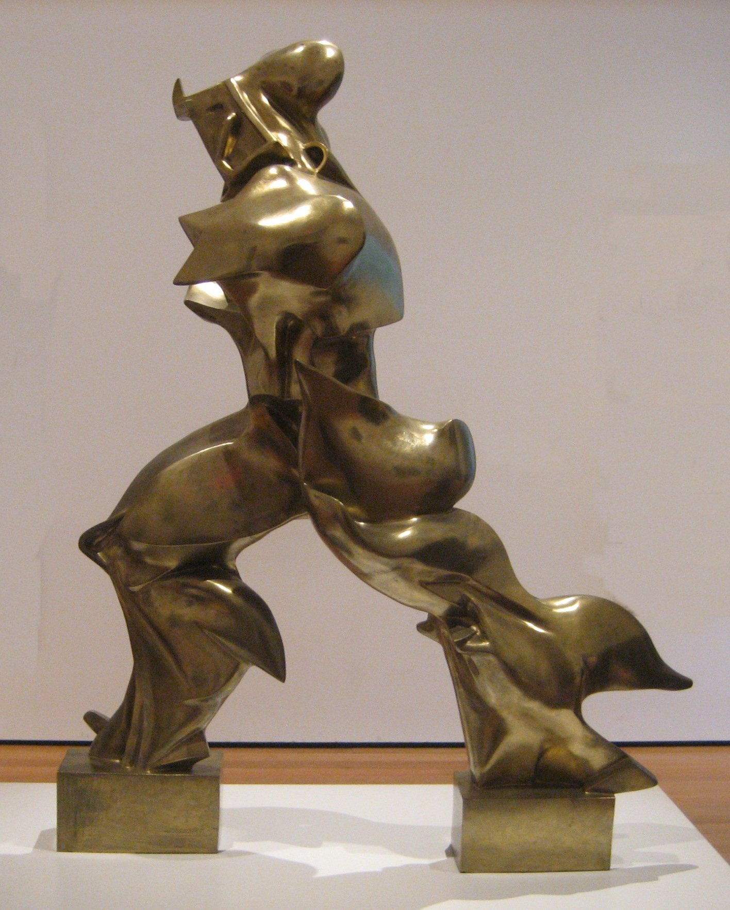

problem and state of the art
Background of the research problem and state of the art
Attempts to treat people using animal material, such as tissues or organs, are not new. In 1628, Colle de Belluno of Padua performed the first human blood transfusions, and in 1682, a doctor attempted to transplant a part of a dog’s skull onto a Russian man who had been injured. The earliest verified attempts at xenotransplantation were made as early as the 18th century, and the first dog or cat corneal transplants were unsuccessfully attempted to heal patients who eventually went blind (Ullman, 1902). The U.S. Food and Drug Administration defines xenotransplantation as “any procedure that involves the transplantation, implantation, or infusion into a human recipient of either (a) live cells, tissues, or organs from a nonhuman animal source, or (b) human body fluids, cells, tissues, or organs that have had ex vivo contact with live nonhuman animal cells, tissues, or organs” (U.S. FDA, 2021).
Grafts of animal skin tissue were accomplished around the end of the nineteenth century. It was particularly around the early 1900s when the trials multiplied. Mathieu Jaboulay, in 1906, accomplished the first two animal organ transplants on humans. The first patient was a woman who had kidney failure by transplanting. A pig kidney was placed outside the human body, at the bend of the elbow, but the graft did not work. He repeated the experiment a few months later using a goat kidney, which was also a failure. It was then the turn of monkeys reputed to be close to humans to serve as raw material for Serge Voronoff for tissue grafts from their testicles on men in order to restore their vitality. It was then necessary to wait until the beginning of the 1960s for new xenografts to be attempted. (Hamilton, 2012) In 1954, the first human organs successful transplant was from the identical twin brother kidney’s deceased patient Richard Herrick. Previously this would be considered a deadly illness, but with the help of the new transplant the first recipient could live eight more years (Powell, 2011).
From Friday January 7, 2022, a 57-year-old man lived with a genetically modified pig’s heart for two months (Rabin, 2022). The xenotranspla3ntation on this patient was announced Monday, January 10 by a team from the University of Maryland School of Medicine in the United States of America. (University of Maryland School, 2022). David Bennett, a sufferer of an end-stage heart failure and arrhythmia, was ineligible for a conventional heart transplant, or even an artificial heart pump system. The U.S. Food and Drug Administration (FDA) therefore authorised this experimental strategy on a compassionate basis, in this consenting patient and without any other therapeutic option. He became the first human being whose life could have been saved thanks to a xenotransplantation.
Nicholas L. Tilney in his book ‘Transplant: From Myth to Reality’ wrote: “When I got here in 1964, the early mortality rate following transplantation was as high as 50 percent. By the end of the year, there were virtually no survivors. Now, if someone dies, it’s a cause of great angst” (Tilney, 2003, p. 86). What kind of questions can the author ask now that with the help of genome editing technologies is it possible to design a molecular fairy-tale in the field of genetic engineering to end the battle of immunological response in organ transplantation and create a personalised bio-formulated and controlled one in a lab?
In practise, the pig currently appears to be the most appropriate animal species as a source of cultivation of organs for humans. The porcine species has many advantages in this respect because: Uncontroversial use for the human species; easy breeding; possible to breed germ-free or organ-free animals; suitable size and similar physiology of transplantable organs compared to humans (Klymiuk et al., 2010). The advantages of xenografts appear as a good fit for breeded organs. Xenografts would make it possible to definitively solve the problem of the shortage of organs; they would also bring a radical answer to all the ethical questions relating to the removal of human organs, whether removal from a living donor or from a corpse.
Another factor further aggravates the situation. Although very favourable in the short term, the percentage of success of organ transplants gradually decreases over time by the destruction of an increasing proportion of graft; there is an unlimited availability of xenografts; organ transplantation becomes an elective intervention (a controllable / malleable bodily feature); guarantee of organs quality and the use of donors germ-free of specific pathogens.
Although it will be important to review, map and understand the technological processes and the scientific processes that xenotransplantation entails, the study problem focuses on the body theme and the ethic-onto-epistemological implications that bio-constructed xenotransplanted bodies can have beyond the human. Hence, my references will not include just science theoretical scholars, but also philosophers, artists and researchers who have analysed these topics from different fields of study.
To relate science socio historical event to artistic practise I will now mention artists from diverse fields that work on topics and create artworks related to body modification, morphological freedom, mutations, and human body (re)design:
Agi Haines’ work is focused on human body speculative design and “the weird and wonderful things that exist inside us” (Haines, n.d). She questions the social response to new bodies that can be seen as malleable material and looks at the human body as a system of interchangeable parts. As you can see in the Figure 2, her artwork ‘Circumventive Organs’ (Haines, 2013) refers to a speculative future anatomical lesson or a natural sciences museum. It questions how bioprinting can make it possible for new organs to become a part of our reality:
[T]he ability to replicate and print cells in complex structures could mean different cells with various functions could be put together in new ways to create new organs we would take millions of years to evolve naturally. Frankenstein-esque hybrid organs could then be put together using cells from different body parts or even different species. (Haines, n.d.)
Patricia Piccinini’s sculptures make us reimagine our relationship with nature and animals through her art. The display of her artwork ‘The Young Family’ in Figure 3 (Piccinini, 2002) resembles animals that were bred in a laboratory. A chimera who’s new materialisation comes from the combination of creative thinking, speculative design and scientific research. She thinks the body, human and / or animal as an artistic interface and she sculpts “life forms that don’t exist” (Badham, 2017) and envisions a hyper-realistic view of hypothetical hybrid bodies.
The Australian performance artist, Stelarc, makes art out of the human body. His project, a combination of divergence of using his body as an artistic tool and interface combining robotics and cybernetics. ‘The Ear of Arm’ (Stelarc, 2008) in Figures 4 and 5 is an example of how a hybrid body can be constructed where he implanted a “third ear” in his forearm that grew in a mouse (Stelarc, n.d.).
This also questions how the body can be cropped into pieces, adding, and subtracting organs, cells, tissues - a body with an interchangeable character. The artist describes the body as a thing that from the biological point is not properly organised and that “[t] he body needs to be Internet enabled in more intimate ways. THE EAR ON ARM project suggests an alternate anatomical architecture - the engineering of a new organ for the body: an available, accessible, and mobile organ for other bodies in other places, enabling people to locate and listen in to another body elsewhere (Stelarc, n.d.).
The provocative artist Wim Delvoye began to tattoo live pigs in the 1990s. He began to experiment with tattooing the skin of dead pigs. Seven years later, he transitioned to work with a new material: the skin or pigs that were alive as a canvas for his artworks. He raised the pigs in a farm in the outskirts of Beijing, China and created the concept of art farm, a place where he would develop his artistic practise with the help of veterinarians to put pigs to sleep to be tattooed. As well to take care of the scars and wounds that their skin would suffer from the tattoos (Sweet, n.d).
In an interview the artist explained, “I show the world works of art that are so alive, they have to be vaccinated…It lives, it moves, it will die. Everything is real.” (Carpentier, 2012). His work ‘Drawings and Models’ in Figures 6 and 7 questions the value of material, as western inspired drawings made by the artists are placed into a pig’s skin and become a decorative ornament who has no other purpose than to shock. In this respect, these pieces are not just limited to the never-ending question of what art is, but also worth reflecting on the ethical implications of some artistic practises. Is everything acceptable in the name of art?
To explore the insides, what scares us in the unknown, the concepts of opening the body, the tangible self, the artist’s Anish Kapoor artworks ‘All inside myself’ (Kapoor, 2012) and ‘Shooting into the Corner’ (Kapoor, 2008-2009) (Kapoor, n.d) are an example of the the eagerness to discover and fantasises about a body without a human body. The material exploration that resembles a quartered body and breaks the bounds between physicality and the limits of the body form and figure.
Sarah Sitkin in her artwork ‘Bodysuits’ (Sitkin, 2018) as in Figure 10 uses her special effects materials to create hyper-realistic figures of human torsos that function as a vest that allows you to experience another body. It also questions whether the body somehow defines our identity, making the suit function as a garment and not as a person. With her interactive art, the artist makes it possible for people who use her artwork to try on several different bodies and be surprised first by the visual impact, and then realise that the person wearing it is still the same (Holowaty Krales, 2019).
Umberto Boccioni’s famous futurist sculpture ‘Unique Forms of Continuity with Space’ (Boccioni, 1913-1931) in Figure 11 depicts a hybrid of human forms and mechanical ones. How to time and space, meaning the environment and the actions, a body becomes in movement and (re)shapes the human form. The material is inorganic yet the shapes look like a mixture of organic bodily movements. The last artwork I will mention is the ballet ‘body_remix/goldberg_variations’ by choreographer Marie Chouinard (Compagnie Marie Chouinard, 2005). In Figures 12 and 13 the dancers use crutches and other technological devices that are made for disabled people. Their movements and bodily tensions are based on the interaction with this apparatus and as well, how the lack of this interaction as well, makes another discovery of how their bodies should or can move in a different way: a desired relationship with the non-human.

Figure 2 Agi Haines. (2013). Circumventive Organs. [3D bioprinting material] Science Gallery, Dublin, Ireland.

Figure 2 Agi Haines. (2013). Circumventive Organs. [3D bioprinting material] Science Gallery, Dublin, Ireland.

Figure 2 Agi Haines. (2013). Circumventive Organs. [3D bioprinting material] Science Gallery, Dublin, Ireland.

Figure 2 Agi Haines. (2013). Circumventive Organs. [3D bioprinting material] Science Gallery, Dublin, Ireland.

Figure 2 Agi Haines. (2013). Circumventive Organs. [3D bioprinting material] Science Gallery, Dublin, Ireland.
Figure 2 Agi Haines. (2013). Circumventive Organs. [3D bioprinting material] Science Gallery, Dublin, Ireland.

Figure 2 Agi Haines. (2013). Circumventive Organs. [3D bioprinting material] Science Gallery, Dublin, Ireland.
Figure 2 Agi Haines. (2013). Circumventive Organs. [3D bioprinting material] Science Gallery, Dublin, Ireland.